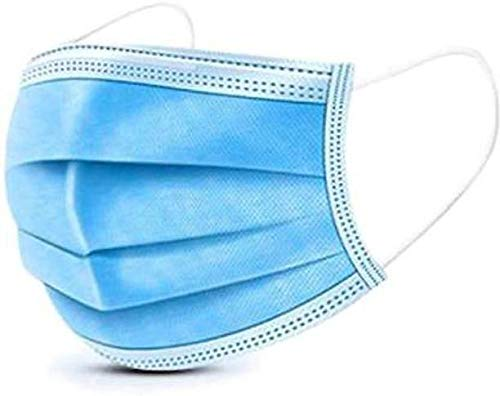

> Words with the prefix RE
> How is Personal Protective Equipment made?
• Masks
• PP Kits
• Face Shields
> What happens when PPE is disposed in bins?
> Is PPE disposal contributing to pollution?
> How can we properly dispose of PPE?
> What can we do to help the environment?
| R | E | U | S | E |
| R | E | D | U | C | E |
| R | E | V | I | V | E |
| R | E | F | U | S | E |
| R | E | C | O | V | E | R |
| R | E | C | Y | C | L | E |
| R | E | C | R | E | A | T | E |
| R | E | P | U | R | P | O | S | E |
Masks:

• Raw materials used are polypropylene polymers.
• The middle layer in a medical mask is made with a nonwoven meltblown process featuring electrostatic charging.
• The two outer layers are made with the nonwoven spunbond process. The 3 nonwovens layers are then calendared and together form the filter media.
• The filter media is pleated and seamed in a converting line that delivers the medical face mask.
PPE Kits:
• Protective gowns are generally made with spunbond or meltblown nonwovens produced via thermal, chemical, or mechanical bonding.
The raw material for this cloth is synthetic, typically polypropylene, polyester, polyethylene, or something similar.
Varying the fibre type, bonding process, and fabric finish can change the properties of the material for specific uses.
• Respirators are made with meltblown nonwoven fabric, which is produced by polypropylene fibres.
Face Shields:
• Face shields are simple PPE that consist of a visor, a lightweight plastic or metal frame, and a suspension system that attaches the shield
to the wearer’s head.
• Visors can be made up of plastics such as polycarbonate, propionate, acetate, polyvinyl chloride, and polyethylene terephthalate glycol
(also known as PETG).
All used PPE has the potential to become contaminated and therefore poses a threat when discarded. PPE works by providing a barrier to the harmful microorganisms (pathogens) that might cause infection. If these potentially contaminated items are then thrown away alongside other general waste in bins, there is a risk that the microorganisms on the products could cross contaminate other items or people. By disposing of PPE waste in a managed way, these risks are minimised.
Waterlogged masks, gloves, hand sanitizer bottles and other coronavirus waste are being found on our sea beds and washed up on our beaches, joining the day-to-day detritus in our ocean ecosystems. The increased risk of plastic waste ending up in oceans and harming both the natural environment and wildlife needs to be considered and mitigated against wherever possible when it comes to PPE disposal. Not only is it important to dispose of these items safely from a healthcare point of view, there is also a need to dispose of them properly so they do not contribute to the bigger ‘environmental’ problem as well.
If PPE is not disposed of in the right manner, it can do more harm than good. If people touch potentially contaminated PPE and then touch door handles or other surfaces, then the risk of infection can increase. Hospital-grade PPE can only be used once to avoid the risk of spreading infection or disease. After completing a task, for example a ward round, all single-use PPE must be discarded using standard infection control precautions. The most effective way is to burn it as high temperatures destroy viruses. As well as destroying viruses, incineration can reduce the amount of waste left over in general. Heat produced by municipal energy from waste incinerators can also be used as a source of energy, either to heat local buildings or to produce electricity.
In this year, particularly in the COVID pandemic, we cannot do much to help the environment, as there is increasing
usage of single-use plastic in making masks, face-shields and PP kits. However, there are several other ways to benefit our surroundings,
by following the 5-R principle:
• We can REUSE paper/plastic bags to decrease waste production
• We can REDUCE the use of electricity by unplugging unnecessary devices
• We can REFUSE the usage of plastic water bottles
• We can RECYCLE various materials such as newspaper, tin cans, plastic products, etc.
• We can REPURPOSE things, to give them a new use, for example, turning an old suitcase into a chair